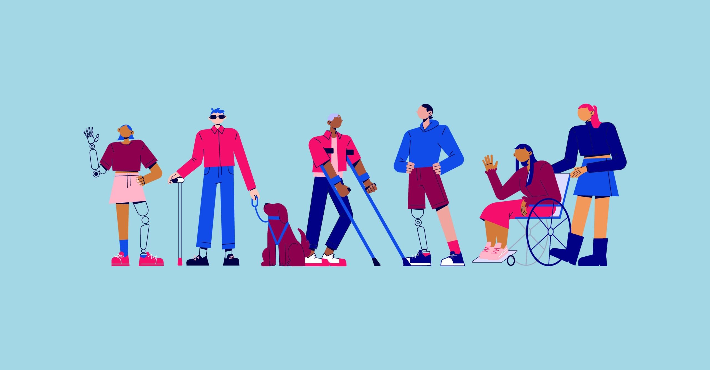

Quais são as possíveis deficiências?
- Visual
- Auditiva
- física
- intelectual
- psicossocial 

Em um cenário de alta conectividade, a acessibilidade digital torna-se um elemento importante para estar bem posicionado no mercado e promover a inclusão social. O conceito explora o modo como as empresas conseguem criar experiências online inclusivas, interligando estratégia, design e tecnologia.
Na prática, produzir conteúdos inclusivos traz benefícios tanto para as marcas como para o público que consome esse material. Por isso, compreender os fundamentos básicos da acessibilidade é um passo importante para garantir uma abordagem responsiva na web.
A acessibilidade digital consiste no uso de soluções para tornar o conteúdo da web acessível a todos, eliminando barreiras para a navegação online. O objetivo é permitir que qualquer pessoa, independente de suas habilidades ou capacidades, consiga aproveitar os materiais disponíveis na internet.
Para isso, são oferecidos recursos adicionais, como fontes legíveis e descrições nas imagens, que tornam o conteúdo acessível e melhoram a experiência do usuário no ambiente virtual. Esse é um passo importante na inclusão digital e social, pois possibilita que os usuários com deficiência naveguem na internet com mais autonomia.
O tema é tão importante que, em 2012, foi criada uma data para reforçar a conscientização: o Dia Mundial da Conscientização sobre Acessibilidade, celebrado toda terceira quinta-feira de maio.
A acessibilidade digital é indispensável para que as pessoas com deficiência possam cumprir suas funções básicas online de forma independente. Como, realizar compras na internet, se informar sobre as notícias do Brasil e do mundo, se relacionar através das redes sociais, estudar, trabalhar etc.
Mas, na verdade, muitas soluções em acessibilidade são úteis para todos os públicos, como idosos, crianças e pessoas que estão momentaneamente com alguma limitação física. Pense que você pode estar um dia com o seu braço dominante imobilizado, como navegar na web com uma mão só? Atalhos de teclado, por exemplo, são uma forma de acessibilidade que melhora a vida de muita gente.
E claro, legalmente falando, a acessibilidade digital é obrigatória! Inclusão é direito das pessoas com deficiência e existem algumas leis para isso. A Lei Brasileira de Inclusão, que foi mencionada anteriormente, tem como objetivo assegurar os direitos destas pessoas, contemplando as mais variadas áreas.
Todos os elementos, incluindo as informações gráficas e textuais da página, devem estar perceptíveis aos sentidos. Nada pode estar invisível ou escondido.
Os botões, controles e outros elementos interativos da página, devem ser operados com cliques e outras adaptações, como: rolando, deslizando, comando de voz e outros dispositivos assistivos.
Todas as informações disponíveis, incluindo botões e seus direcionamentos, devem estar apresentadas de forma lógica e compreensível para todos os usuários.
O conteúdo da página deve ser compatível com todos os dispositivos, incluindo as tecnologias assistivas.
Caso você seja um produtor de sites, veja o vídeo aqui do lado,
pois ajuda muito e explica em
melhores
detalhes sobre acessibilidade digital.
Pode parecer brincadeira, mas é extremamente importante manter o seu site
acessível, pois não ajuda
só
eles, mas ajuda você também.
| promove igualdade social
| Ampliação do público
| Inovação
| impacto da marca